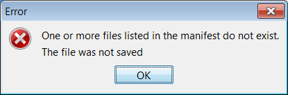

<link href="ebook.css" rel="stylesheet" type="text/css" />). Convert '<a name="... ' to '<a
id="...' (the "name"
attribute for <a> elements has been deprecated in favor of the "id" attribute,
and ePub does not allow "name" attributes here). Change any "id" attributes
which begin with a digit to begin with the characters "id" (in XHTML identifiers must begin
with alphabetic charaters). Save as UTF-8.At this point, if I select "File->Save As", browsing to the desired file folder and specifying a file name that ends in ".epub", I will get an error, because a cover image and Table of Contents are listed in the manifest, but do not reference files in the file system.

It is possible at this point to create a valid ePub without a Table of Contents or cover image; simply remove the non-existent items indicated by the "stop" icon ("_toc" and _"cover") and the ePub file can be created.
Edit->Build Cover. A new file will be created wrapping the image file.
The new file will be added to the Manifest, and will be placed at the beginning
of the Content list.<h3 class="chapter"> to
<h2 class="part"> and <div class="chapter"> to
<div class="part">.Edit->Build TOC". ePubEditor will scan every file in the Content, in
the order they appear in the Content list, for header elements (e.g.,
<h2>, <h3>, h4>, etc.) First level headers (<h1>) are presumed to be used for
publication titles, and are skipped. If an entry existed on the "Guide" tab for
"toc" that file will be overwritten, otherwise a new file will be added the manifest with the id
"toc". If not already present, add the file to the content if you want it to be part of the normal
reading order of the document (not required). Use "Move Up" and "Move Down" to
place the file where you want it in the reading order (For example, the English standard is
before other content, the French standard is after).<ul> by default. The table of
Contents for A Tale of Two Cities has nested lists as for a Table of Contents;
the outer list was constructed from <h2> headers and refers to the three "books" that make up the publication;
the three inner lists were constructed from <h3> headers, and each refers to the chapters within each book.
Lists constructed from <h2> headers appear as <ul class="h2"> and lists
constructed from <h3> headers appear as <ul class="h3">. For A Tale of Two
Cities, the items in <ul class="h3"> should be numbered (an "Ordered List") with
roman numerals. To perform this conversion in ePubEditor, select Edit->Replace
from the main menu. Search for all <ul> elements having the "class" 'h3', and
replace them with an <ol> element with the "style" of
'list-style-type:upper-roman'.Edit->Build NCX.
ePubEditor starts by looking on the Guide tab for the first entry with the type
of "toc" which it assumes to be the HTML Table of Contents. If a "toc" entry is
not found, ePubEditor will first attempt to build an HTML table of contents as
outlined above. The new NCX file will be added to the manifest and the correct
reference will be added to the internal content properties.File->Compile To ePub to save your completed ePub.